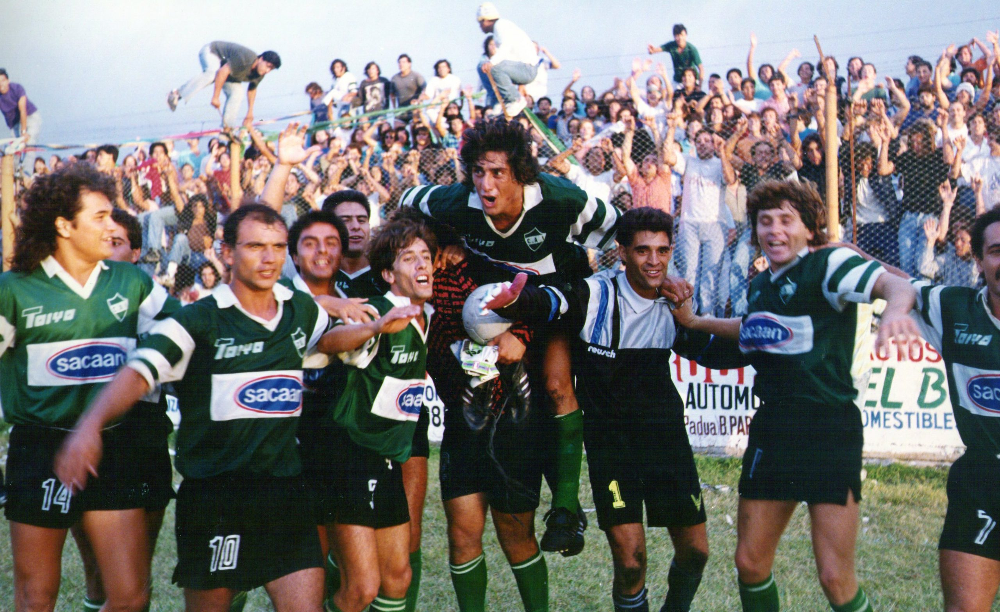

Historia

Aquellos jóvenes del pueblo que practicaban fútbol en los terrenos de la Parroquia San Judas Tadeo y en una cancha denominada Roberts, van convenciéndose de formar un club de fútbol. Corría 1911 y con la llegada del club Estudiantil Porteño más la influencia del Ferrocarril Oeste y su gran movimiento obrero en la zona, van sumando adeptos. Este marco fue ideal para el desarrollo de la práctica del fútbol… ese deporte que practicaban cada vez más los criollos. Por esa época, se destacaban varios jóvenes. Uno de ellos, Carlos Vidaurrazaga (foto), impulsó la formación de un club, luego de varias reuniones en la casa del vecino Adolfo Luis Testa y en el Bar Bagnacedri, ubicado en Las Heras y Zufriategui.
Así, el 1º de abril de 1912 nace nuestro club bajo el nombre de Social Ituzaingó que luego pasará a llamarse tal como lo conocemos hoy: Club Atlético Ituzaingó. Los colores adoptados para el CAI fueron el verde y blanco, asociados al Ferrocarril Oeste y a los empleados ferroviarios, tal como señalamos anteriormente.
Por más de quince años el club utilizó una cancha emplazada en la actual Plaza 20 de Febrero, pero en 1936 debió abandonar este espacio y construyó su nuevo campo deportivo que en la actualidad es el Estadio «Carlos Alberto Sacaan», ubicado en Mariano Acosta y General Pacheco, e inaugurado el 1 de noviembre de aquel año.
Carlos Vidaurrazaga fue su primer presidente y a él le siguieron Levine, Justo, Ratti, Tiscornia, Idaberry, Mori, Marandino, Guercio, Rovati, Firpo, Peta, Basterretche, Dupiellet y Longoni. Entre otras personalidades destacadas podemos mencionar a Rogelio Goyaud, Osvaldo Ferrero, Carlos Sacaan, Gregorio Nuñez, Roberto Reviello, José Luis García, Hernando Politano, entre otros.
El Club Atlético Ituzaingó comenzó a desarrollar actividades deportivas diversas, en los primeros tiempos para los vecinos del barrio pero poco a poco se convirtió en una entidad señera en el Oeste del Gran Buenos Aires.
Situacion Actual
El primer equipo del Club Atlético Ituzaingó compite actualmente en la tercer categoría del fútbol argentino.
Cuenta con una Dirección Institucional de Fútbol a cargo de Diego Ayoroa. La misma se sumó a la estructura del Club con el objetivo de reconvertir sus diferentes instancias. Su principal función es la de establecer un modelo de juego que aplique tanto al fútbol profesional como al fútbol formativo dentro de la estructura AFA
Además de enfocarse en una identidad dentro de la cancha, también busca aplicar reglas de convivencia y valores que ayuden a los futbolistas y al respeto hacia la institución.
De esta manera, la dirección es la encargada de seleccionar un cuerpo técnico para el primer equipo que esté en línea con la forma de juego así como interviene, en conjunto con los directores técnicos, en la búsqueda y selección de los jugadores del plantel.
Lo mismo aplica para las juveniles del club, con la decisión firme de que los jugadores nacidos allí tengan un lugar en el plantel profesional. La dirección está a cargo de Ayoroa, ex jugador y entrenador del club que logró ascensos en ambas funciones, y conforma una secretaría técnica que realiza tareas de visorias y análisis de potenciales incorporaciones a cargo de los ex jugadores Marcos Zampini y Javier Paez. La misma cuenta además con un seguimiento estadístico a cargo de Amilcar Reguera.
En cuanto al primer equipo, desde abril de 2024 el DT es Matías De Cicco y lo complementan en su cuerpo técnico el ayudante de campo Adrián Gerry, el preparador físico Hernán Jimenez, el entrenador de arqueros Miguel Ríos, el ayudante Leandro Rodríguez y los videoanalistas Heber Lajst y Facundo Otero.